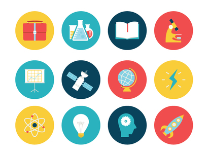

NỘI DUNG KIỂM TRA CÁC MÔN THI (SỞ RA ĐỀ) KỲ THI KIÊM TRA CUỐI HK2 NĂM HỌC 2021-2022

Viết bởi Administrator Thứ bảy, 30 Tháng 4 2022 16:08
NỘI DUNG KIỂM TRA CÁC MÔN THI (SỞ RA ĐỀ) KỲ THI KIỂM TRA CUỐI HK2 NĂM HỌC 2021-2022

------------------------
------------------------
------------------------
------------------------
------------------------
------------------------
------------------------
Tin mới hơn:
- 27/10/2022 13:07 - MA TRẬN ĐỀ KIỂM TRA GIỮA HỌC KỲ 1 NĂM HỌC 2022-20…
- 26/09/2022 08:45 - THÔNG BÁO KHẨN CỦA GIÁM ĐỐC SỞ GD&ĐT QUẢNG NAM
- 07/09/2022 08:59 - KẾ HOẠCH CHUYÊN MÔN – THỜI KHÓA BIỂU NĂM HỌC 2022-…
- 21/08/2022 16:45 - Kế hoạch tổ chức Lễ kỷ niệm 20 năm thành lập trườn…
- 18/07/2022 16:05 - Triệu tập Giáo viên Tham gia khảo sát về trường TH…
Tin cũ hơn:
- 29/04/2022 09:18 - BAN ĐẠI DIỆN CMHS TRƯỜNG THPT CHUYÊN NGUYỄN BỈNH K…
- 21/04/2022 19:37 - KẾ HOẠCH ÔN TẬP VÀ KIỂM TRA CUỐI HỌC KỲ 2, NĂM HỌC…
- 21/04/2022 07:03 - DANH SÁCH NHỮNG MẠNH THƯỜNG QUÂN, CÁN BỘ, GIÁO VIÊ…
- 12/03/2022 08:31 - CHUNG KẾT GIẢI BÓNG BÀN CÁN BỘ, VIÊN CHỨC, NGƯỜI L…
- 28/01/2022 08:28 - Kế hoạch xuất bản Tập san kỷ niệm 20 năm ngày thàn…